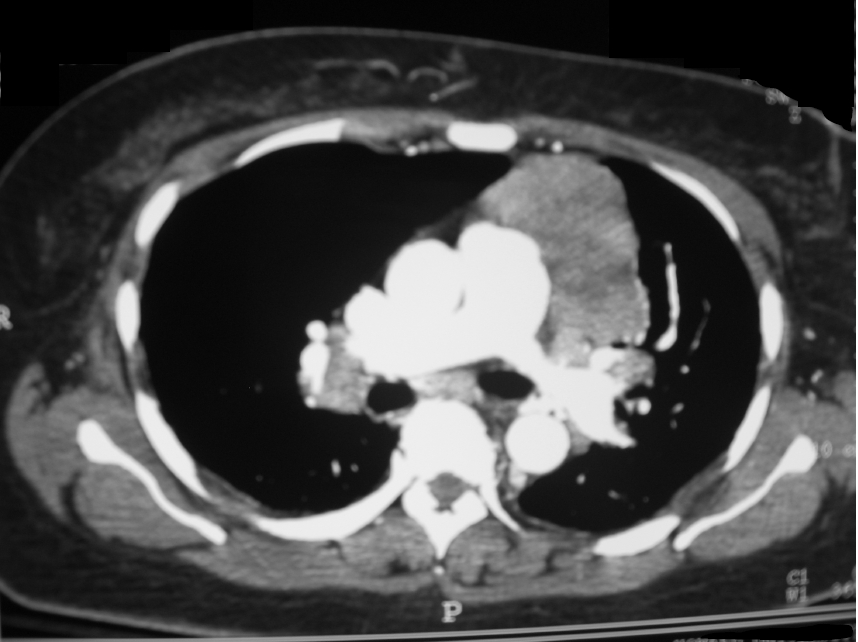

Mnemônico-âncora
Tórax na MG: o timo e os 4 motivos
Quatro chips de tórax na trilha: DM→câncer · antissintetase→DPI · MG→timo · LEMS→CaPC. A MG entra pelo timo — sempre pedir imagem.
Timo "normal" e mesmo assim imagem
O timo é normal em cerca de 75% dos casos de MG — mesmo assim, pesquisar o tórax (imagem de timo) nos pacientes com miastenia gravis.

Kurukumbi M et al. Rare association of thymoma, MG and sarcoidosis. J Med Case Rep 2008;2:245. Licensed under CC BY 2.0. Source: commons:Anterior_mediastinal_mass_thymoma.jpg

Timoma · mediastino anterior
A imagem que manda operar: massa tímica no mediastino anterior. Em todo paciente com MG, a pergunta operacional é: tem timo morfologicamente normal, hiperplasia ou timoma? A diferença define se vai para timectomia direta ou para a tríade <50/generalizada/AChR+.
TC ou RM
Imagem de tórax: TC ou RM para avaliar o timo.
Tórax na trilha de fraqueza — 4 motivos
Quatro motivos de "ir ao tórax" na trilha de fraqueza:
- Dermatomiosite → rastrear câncer
- Antissintetase → doença pulmonar intersticial
- MG → timo
- LEMS → CaPC
Mediastino anterior esquemático com timo destacado + seta "sempre pesquisar".
Quiz
Q1. Em MG, imagem de tórax:
Gabarito: B. A regra é pesquisar o tórax; o percentual de "normal" não dispensa a imagem. PCDT reforça que hiperplasia e timoma são frequentes na literatura BR.
Q2. O motivo de tórax específico da MG na trilha é:
Gabarito: B. A coluna MG no tabelão dos 4 é timo (timectomia opera se tumor; tríade <50/generalizada/AChR+).
Q3. A divergência entre a literatura clássica (~75% timo "normal") e o PCDT 2022 (~70% hiperplasia + ~10% timoma) significa, na prática:
Gabarito: B. Os números variam entre séries (~75% "normal" na literatura clássica; ~70% hiperplasia + ~10% timoma no PCDT). O que não se discute é a imagem de tórax para avaliar o timo.